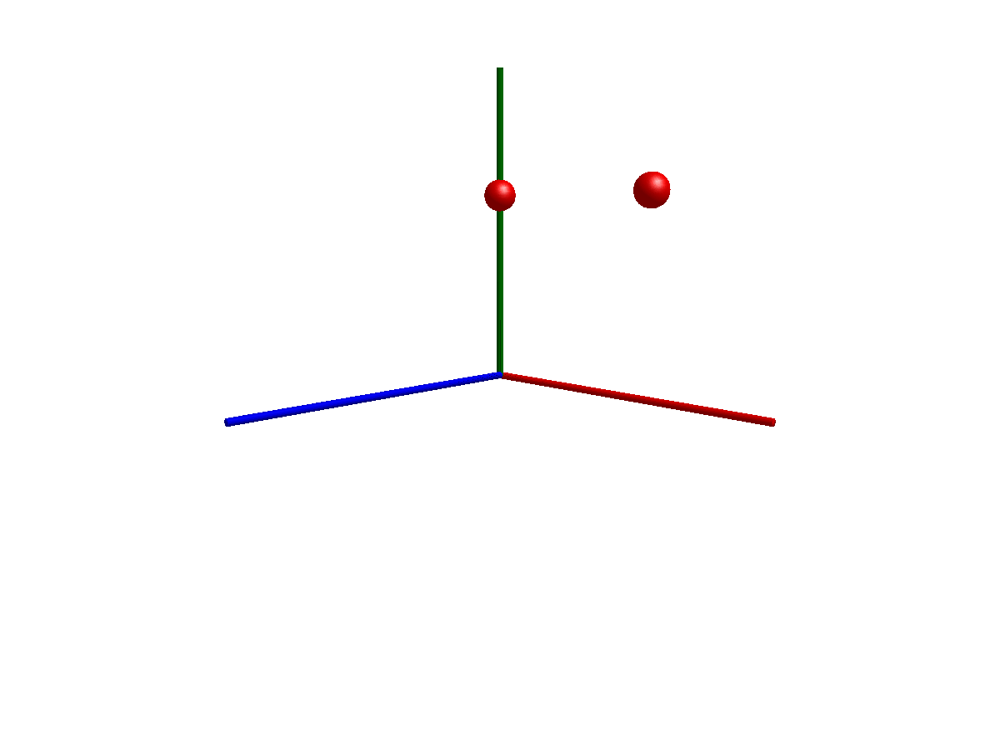

Bodies in space
The default gravity model in Multibody.jl computes the gravitational acceleration according to
\[a = g n\]
where $g$ and $n$ are properties of the world. The default values for these parameters are g = 9.81 and n = [0, -1, 0].
This example demonstrates how to use the point gravity model, in which the gravitational acceleration is always pointing towards the origin, with a magnitude determined by $\mu$ and $r$
\[-\dfrac{\mu}{r^T r} \dfrac{r}{||r||}\]
where $\mu$ is the gravity field constant (defaults to 3.986004418e14 for Earth) and $r$ is the distance of a body from the origin.
In this example, we set $\mu = 1$, point_gravity = true and let two masses orbit an invisible attractor at the origin.
using Multibody
using ModelingToolkit
using Plots
using JuliaSimCompiler
using OrdinaryDiffEq
t = Multibody.t
D = Differential(t)
W(;kwargs...) = Multibody.world
@mtkmodel PointGrav begin
@components begin
world = W()
body1 = Body(
m=1,
I_11=0.1,
I_22=0.1,
I_33=0.1,
r_0=[0,0.6,0],
isroot=true,
# quat=true, # Activate to use quaternions as state instead of Euler angles
v_0=[1,0,0])
body2 = Body(
m=1,
I_11=0.1,
I_22=0.1,
I_33=0.1,
r_0=[0.6,0.6,0],
isroot=true,
# quat=true, # Activate to use quaternions as state instead of Euler angles
v_0=[0.6,0,0])
end
end
@named model = PointGrav()
model = complete(model)
ssys = structural_simplify(IRSystem(model))
defs = [
model.world.mu => 1
model.world.point_gravity => true # The gravity model is selected here
collect(model.body1.w_a) .=> 0
collect(model.body2.w_a) .=> 0
]
prob = ODEProblem(ssys, defs, (0, 5))
sol = solve(prob, Rodas4())
plot(sol)import GLMakie
Multibody.render(model, sol, filename = "space.gif")
Turning gravity off
To simulate without gravity, or with a gravity corresponding to that of another celestial body, set the value of $g$ or $\mu$ appropriately for the chosen gravity model.